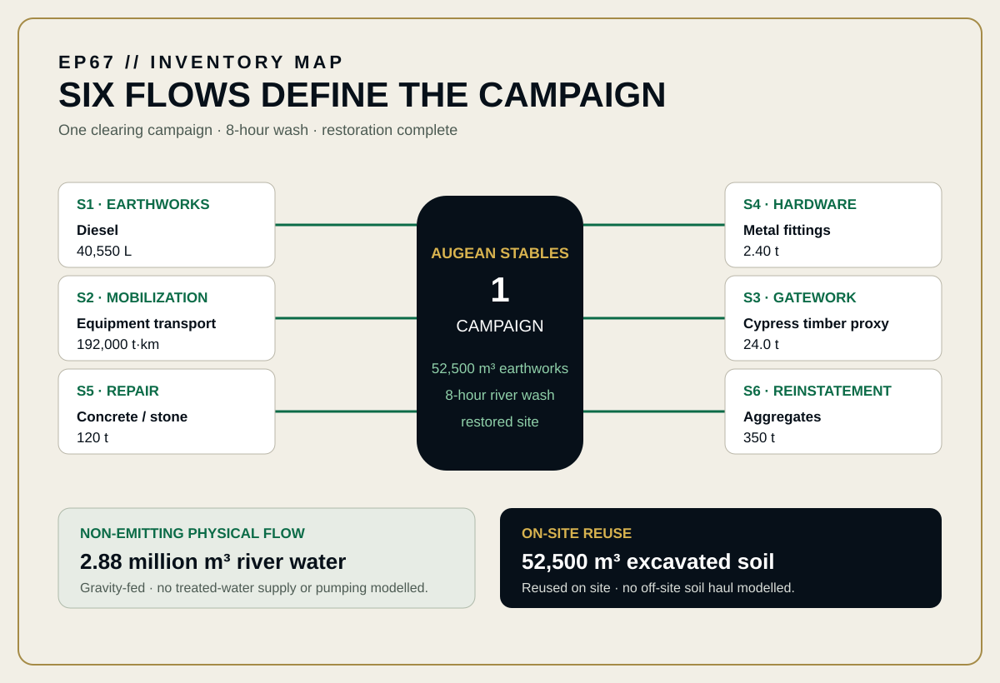
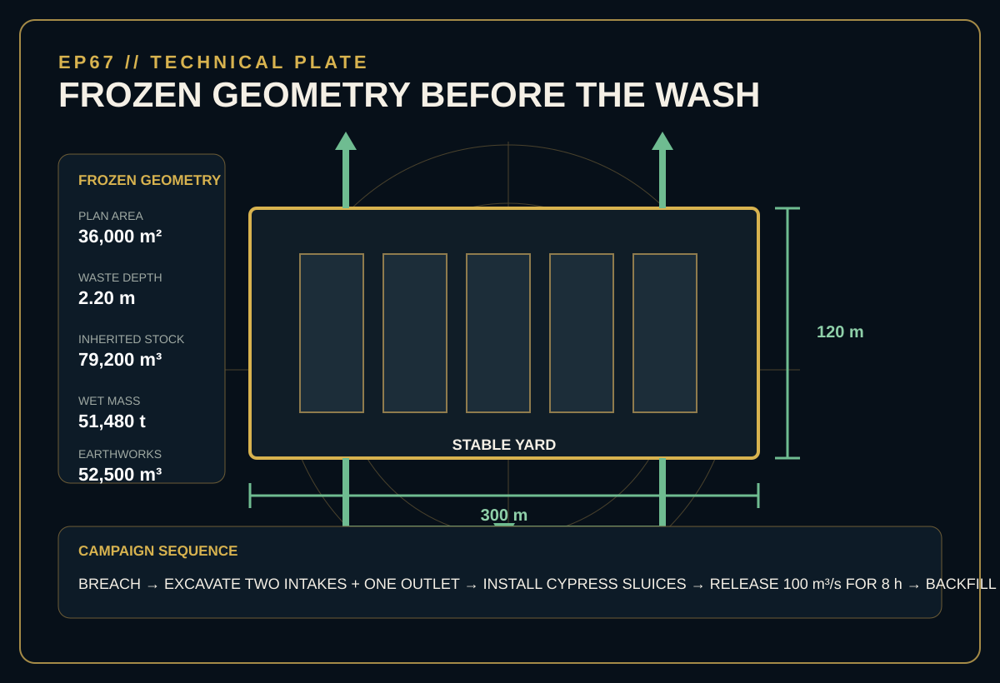
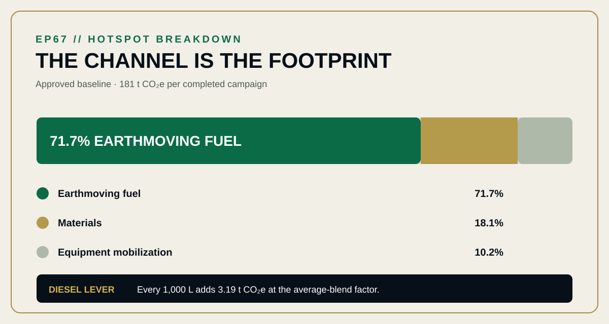

EPISODE #67 · MYTHS & LEGENDS
The Augean Stables
Can two rivers clean it by sunset?
Narrative engineering reconstruction — not a verified LCA or comparative assertion.
THE SUBJECT
Clean once. Restore everything.
The approved episode defines one complete clearing campaign that removes the modelled inherited stock and returns the stable yard, temporary channels and ordinary river courses to serviceable condition within one daylight period at Elis. The functional unit measures the intervention, not the inherited cattle burden.
The reconstruction freezes a 300 × 120 m stable plan, a 2.20 m waste depth and 79,200 m³ of inherited stock, corresponding to 51,480 t wet mass. Historic cattle and manure generation, original stable construction, labour, food and reward, and downstream effects after the outlet remain outside the modelled campaign.
79,200 m³ inherited stock
36,000 m² stable plan × 2.20 m frozen waste depth.
2.88 million m³ river water
Two diverted rivers pass 100 m³/s for eight hours; no pumping is modelled.
71.7% earthmoving fuel
40,550 L of diesel dominates the approved baseline footprint.
Transparent proxy use
UK 2026 factors are applied outside their native reporting context because Greece-specific non-road factors were unavailable.
VISUAL MODEL
The river is free. The pathway is not.
The inventory map separates emitting campaign flows from gravity-fed physical flows. The technical plate freezes the geometry before inventory and sensitivity calculations.


DETAILED LIFE CYCLE INVENTORY
Six flows define the campaign
The approved baseline uses the declared 2026 UK Government factors and sector proxies. S1 and S2 combine direct and well-to-tank factors; material-use factors are cradle-to-gate sector proxies.
| Stage | Component / activity | Activity data | Climate change | Modelling basis |
|---|---|---|---|---|
| Earthworks | Earthmoving diesel | 40,550 L | 129.5 t CO₂e · 71.7% | S1 · Diesel average blend: 3.19455 kg CO₂e/L, Fuels + WTT. Activity basis: 52,500 m³ × 0.772 L/m³. |
| Mobilization | Equipment mobilization | 192,000 t·km | 18.5 t CO₂e · 10.2% | S2 · HGV >33 t average laden: 0.09634 kg CO₂e/t·km, Freight + WTT. Activity basis: 480 t × 400 km. |
| Restoration | Concrete / stone repair | 120 t | 14.3 t CO₂e · 7.9% | S5 · Concrete primary: 118.803 kg CO₂e/t, Material use. Foundation breach and repair. |
| Gatework | Metal gate hardware | 2.40 t | 9.17 t CO₂e · 5.1% | S4 · Metals primary: 3,821.95 kg CO₂e/t, Material use. Straps, pins and fittings. |
| Gatework | Timber gatework | 24.0 t | 6.47 t CO₂e · 3.6% | S3 · Wood primary: 269.504 kg CO₂e/t, Material use. Cypress material proxy. |
| Restoration | Aggregates | 350 t | 2.73 t CO₂e · 1.5% | S6 · Aggregates primary: 7.80307 kg CO₂e/t, Material use. Bedding and reinstatement. |
| Hydraulic flow | River water | 2.88 million m³ | No emitting flow modelled | Gravity-fed river water; no treated-water supply or pumping is modelled. |
| Earthworks | Excavated soil reused on site | 52,500 m³ | No emitting flow modelled | Reused on site; no off-site soil haul is modelled. |
| Approved baseline total | 181 t CO₂e | Per completed clearing campaign. | ||
Included
Temporary intake and outlet channels, earthmoving and site restoration, timber gates and metal fittings, foundation breach and repair, equipment mobilization and fuel.
Excluded
Historic cattle and manure generation, original stable construction, labour, food and reward, and downstream effects after the outlet.
Campaign cut-off
Equipment enters Elis → channels are backfilled → masonry and river courses are restored.
Proxy disclosure
Greece-specific non-road factors were unavailable. UK 2026 factors are applied transparently outside their native reporting context.
HOTSPOT
Gravity moves water. Diesel moves earth.
The rivers move the waste; fuel used to shape and then reverse their path dominates the result.

Main result
181 t CO₂e
One completed river-assisted clearing campaign.
Earthmoving fuel
71.7%
The dominant baseline contributor.
Materials
18.1%
Concrete/stone repair, metal hardware, timber gatework and aggregates.
Mobilization
10.2%
192,000 t·km of equipment movement.
Diesel sensitivity cue
3.19 t CO₂e
added for every 1,000 L at the baseline average-blend factor.
SENSITIVITY · CHANNEL VOLUME
The physical range runs from 148 to 220 t CO₂e
Shallow: 39,375 m³ earthworks → 148 t CO₂e.
Baseline: 52,500 m³ → 181 t CO₂e.
Deep: 68,250 m³ → 220 t CO₂e.
Only earthwork volume changes; all other flows stay fixed. A 30% deeper cut lifts the campaign to 220 t CO₂e.
SENSITIVITY · FUEL PATHWAY
The same 40,550 L can move the total by 58%
HVO: 0.59997 kg CO₂e/L → 75.5 t CO₂e (−58.2%).
Average blend: 3.19455 kg CO₂e/L → 181 t CO₂e.
Mineral diesel: 3.28564 kg CO₂e/L → 184 t CO₂e (+2.0%).
Geometry and boundary stay fixed. HVO biogenic CO₂ is recorded outside the reported footprint following the DEFRA factor structure.
INTERPRETATION
The channel is the footprint
Inherited waste defines the service but its historic cattle emissions remain outside the campaign. Geometry changes how much earth must be moved; fuel pathway changes the carbon intensity of moving it. The published sensitivities show that these two modelling choices control the campaign much more than the mineral-diesel blend itself.
THE VERDICT
“Gravity clears the yard; construction creates the footprint.”